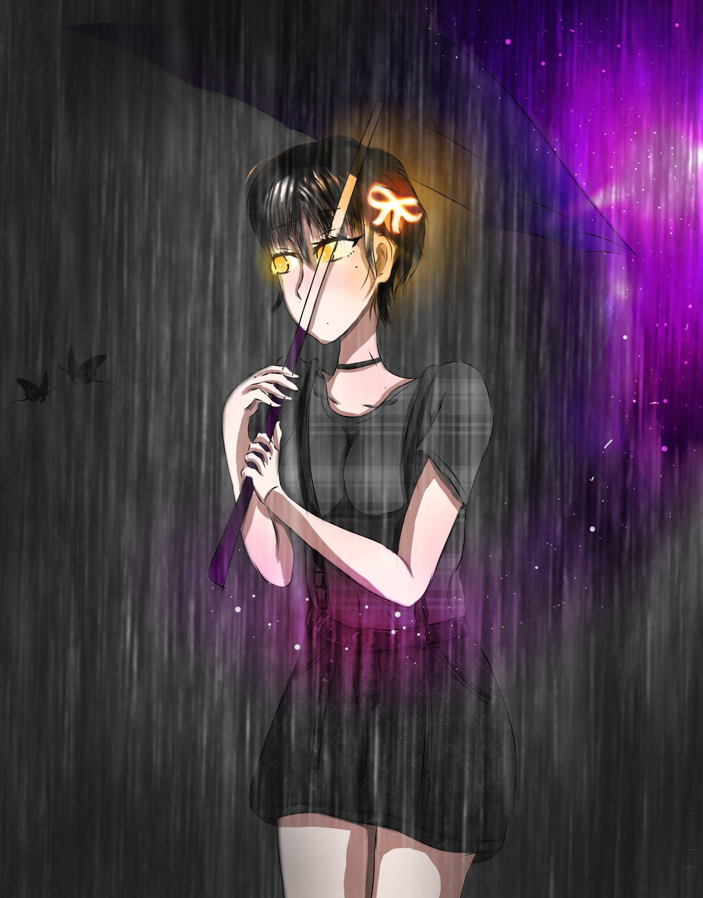

Aqui venho listar, ou tentar, as imagens do querido utinho conforme o tempo passou, demonstrando sua evolução
Começando pelo começo, um dos primeiros registros do nosso maestro:

Com o passar do tempo ele evoluiu e demonstrou habilidades ao criar a pandora
Oia que gracinha meudeus
Musculosa e gostosa, meu sonho de consumo: check!
Oia essa obra prima bixo, da vontade até de atirar na Yae Miko
Homenagem dele feita a arlecchino, coisa de beta

Recentemente, ele desenvolveu essa obra prima enquanto fazia uma obra que não era para baixinhos

E por fim, a última e melhor obra prima do grande junin: